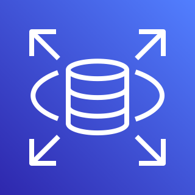

Senior Cloud Engineer Technical Assessment
An AWS Cloud example by Alan Butland. June 2021
Overview
This proof of concept was designed by myself using terraform and AWS best practices. It makes use of several AWS Cloud services to ensure High Availability and Scalability. The full infrastructure can be deployed/destroyed with two Terraform commands in just a few minutes.
In designing this proof of concept, I created a standalone docker linux container which included the various tools I required, such as the Terraform CLI, Git CLI and the AWS CLI. I also set it up the Terraform code as a new Repo in my personal Git account. I installed this on the docker container and linked the container volume externally so I could edit the files in VS Code. This meant I could use the various useful features of VS Code, such as Git integration, the Terraform extension and the Docker extension.
I set up a new IAM user on my account called ‘terraform-user’ and give him admin access. I used that users security credentials to configure Terraform on the docker container. This allowed me to create/destroy any infrastructure necessary for testing.
I have set up this proof of concept in the eu-west-2 (London) region. However, it is simple enough to change this should it be necessary.
Design
High Availability
To ensure high availability of the infrastructure, there are certain design choices you can make.
First of all, we can make use of multiple aws availability zones (AZ’s). If we create multiple web servers in multiple AZ’s and run them in tandem, we can ensure that, should one (or two) of amazon’s AZ’s go down, we would still have a web server up and running.
We can then automatically manage this by using a Load Balancer to route the public to the appropriate web servers.
In addition to this it is possible to deploy your infrastructure to another AWS region in case a whole AWS region goes down. However, this may not be possible (due to data protection).
Another way of ensuring high availability is to make use of AWS’s Auto Scaling Group. This service can automatically deploy another web server should it detect one of the current web servers has been terminated or become unresponsive. Additional health checks can also be used such loss of network connectivity or software issues.
Scalability
Another use of the Auto Scaling Group (ASG) is the ability to increase the number of available web servers. Should the public web traffic become too much for the current web servers, we can increase the desired number of web servers we require. The ASG will create additional web servers as required.
It is also possible to amend the Launch Configuration of any web servers launched by the ASG to change the instance settings. For example, we can increase the instance type (https://aws.amazon.com/ec2/instance-types/), the number of CPUs or the size of the Volumes on the instance.
Any changes we make to the ASG launch configuration will affect new instances that are created. Existing instances will be unaffected. This way we can add new instances with new configurations without any loss of service.
Virtual Private Cloud (VPC) - Each account comes with a default VPC, however, it is better to deploy any new infrastructure to your own VPC that can be configured as you wish.
Availability Zones (AZs) - We are using all 3 available AZs in the eu-west-2 (London) region. There will be a private subnet, public subnet, web server and NAT gateway in each AZ.
Private Subnets - The web servers will be deployed to the private subnets. The Auto Scaling group will deploy any new instances to each of these subnets depending on availability. The private subnets are inaccessible outside the VPC. They can only be interacted with via either the Load Balancer or the NAT Gateway
Public Subnets - The NAT Gateways will be deployed to the public subnets. These use a route table to the Internet Gateway and allow internet traffic between outside the VPC to the private subnets. The load balancer is also placed in the public subnet as it requires internet access.
Load Balancer - The load balancer routes public traffic to the corresponding available web servers in the private subnets. It spans all 3 public subnets so has high availability.
Auto Scaling Group - This covers the 3 private subnets and allows new web servers to be deployed to each private subnet as required/necessary.

Terraform
The AWS infrastructure above will all be deployed using Terraform. Terraform is a tool for building, changing, and versioning infrastructure safely and efficiently.
The terraform code is stored in Git : https://github.com/Methendor/terraform
I have included extensive comments and instructions in that repo for how to use the Terraform code to deploy the required infrastructure.
The code is setup so that the infrastructure can be deployed to different environments, Dev and Production. By referencing a specific .tfvars file, it can deploy the full infrastructure with either dev or prd name prefixes to completely separate environments. Various settings can be set up for each environment. For example, different instance types for dev and prd (if you require cheaper smaller instances set up in Dev compared to Production for example).
I have split the terraform code up into various different files for clarity and to keep things more organised. I have made use of many Terraform best practices, such as using external modules, variables, .tfvars files, data blocks etc.
Requirements
In order to set up this proof of concept, there are a number of requirements:
Multiple AWS Accounts. It is recommended that we have 3 AWS accounts:
IAM Account. Account for the setting up of AWS users such as Cloud Engineers, Admins etc. These users will be able to assume IAM Roles in the other two accounts as necessary
Dev Account. Account for the dev environment.
Production Account. Account for the production environment
IAM cloud engineer user accounts/roles/policies set up to allow creation of the required infrastructure using Terraform. Also require security credentials (AWS ID and secret key)
Deployment/Dev environment requires:
Terraform CLI
Git CLI
Git account/repo for Terraform and/or website code.
Optional:
Jira account for managing Dev workflow
Confluence for knowledge/document storage
Aws-vault for easy switching between different aws credentials/roles
Docker container with all requirements in one stand alone environment
Adding a Database
It is possible to add database architecture to this proof of concept quite easily. AWS has various database solutions available.

RDS - Relational Database Service
An RDS addition is fairly easy to set up with the current proof of concept. It involves adding RDS instances in each of the private subnets alongside the web servers (via the Auto Scaling Group). We will have 1 instance as the primary database, with the other two as database standby read replicas. These can be set up so that if the primary database goes down, one of the other standbys will automatically become the primary database.
All available web servers will connect with the primary database, with any data being replicated to the other standby instances.
A RDS instance is extremely simple to set up and cheap. However, they can currently only support up to 64tb of data. If the storage of data is likely to be more than this, it is possible to use Redshift as the database instead. However, this is 10 times more expensive and requires additional setup and configuration.
Security Considerations
Considerable thought has gone into the security of the proof of concept. Luckily AWS makes security simple to implement into your infrastructure.
Security of the web servers - The web servers are all put into private subnets in the VPC. This means that the instances can only be accessed by other objects in the same VPC (as long as the security groups are correctly configured). The only way to access the instances are via the AWS Systems Manager (I have set up the instances so that the Systems Manager agent is installed on all new instances) which allows you to SSH into the instance through the AWS console. I considered setting up a bastion server for this purpose. However, the Systems Manager is more secure and easier to set up. For a bastion server you will need to set up the security yourself and also maintain the various SSH key-pairs that will be required.
The web servers are given access to the internet via their associated NAT Gateways. However, the ports are tightly controlled. Only incoming HTTP traffic is allowed through port 80 (which will be routed through the Load balancer). They are also outgoing internet access to allow them to download any required updates/installations.
Security of the AWS Accounts - It is necessary to restrict the AWS accounts to only Cloud Engineers or Admins. Therefore all users/devs will create IAM accounts on the main IAM account. Then they will be given Roles they can switch to in the other accounts as necessary. For example:
Developers. Can be given access to switch to the devRole Role on the Development Account. This role will allow them access to various dev related services. Ie, they can use System Manager to access the web server. Or they can create additional web servers for various dev branches/features
Cloud Engineers. Can be given access to switch to the cloudEngineerRole in both the Production and Dev accounts. This will have enhanced permissions for creating/amending/destroying services and resources. But will not have access to billing/account management.
Admins. Full access to the IAM Account and can switch roles to the adminRole in both the Production and Dev accounts.
Additional Roles can be created, such as as ‘Billing Manager’ who will be able to see the billings of each of the accounts.
Devops
For the devops side of things, I highly recommend the use of both Jira and Git.

Jira
Jira is a powerful work management tool and is one of the main tools for Agile teams. It is extremely useful for the managing of dev sprints, bug tracking and fixing, new features, release planning. It can also be integrated into other systems, such as Slack, Jenkins, Git etc. Jira can be set up with different boards for different departments. For example, one board for Cloud Engineering work and one for the actual website work.

Git
Git is the most popular version control system is the world. It is recommend for both the Terraform and the web code, that various branches on the git repos are created for each dev work corresponding to appropriate Jira Tickets. These can be tracked from initial Creation to Production Deployment. The proof of concept has been set up so that the web servers can be updated from the web git repo using a specific release tag.
Future Work
Jenkins
It is possible to set up various Jenkins jobs to automate the deployment process. We could have jobs to deploy newest version of the web site to each instance, jobs for shutting down/starting up instances to save on cost.
Additional Environments
It is possible (by adding additional env_vars.tfvars files) to add more environments. Such as a Test and a Pre-Production environment. These can be created/destroyed as needed.
Enhanced configuration of separate Environments
More configuration can be done to the dev environment. For example, we can set up the terraform to remove the Load Balancer and Auto Scaling. Also just have the web servers in a public subnet which can be accessed by Developers through Code editors (such as VS Code via SSH).
Pricing Estimates
It is possible to get estimates of the pricing costs for this proof concept. But depends highly on the amount of web traffic the company will expect. Rough estimates suggest approx £30 - £100 depending on infrastructure decisions such as instance sizes and incoming traffic.
Email/SMS Notifications
It is possible to set up Email/SMS notifications when instances are created/destroyed as part of the Auto Scaling.
Container Deployment
Set up a docker container which holds all the requirements for deployment (terraform/git cli etc) and use docker commands to run the deployment externally.
Tools/Resources
Terraform Code: https://github.com/Methendor/terraform
Website Code: https://github.com/Methendor/website
Terraform: https://learn.hashicorp.com/tutorials/terraform/install-cli
Website Code: https://docs.aws.amazon.com/cli/latest/userguide/cli-chap-install.html
Website Code: https://gist.github.com/derhuerst/1b15ff4652a867391f03
Website Code: https://code.visualstudio.com/
Website Code: https://www.docker.com/products/docker-desktop
Conclusion
Overall, I have really enjoyed doing this Proof of Concept. I have quite a lot of experience in AWS cloud technology, I completed the AWS Cloud Practitioner Foundation course and I use AWS services extensively in my day to day job. However, getting to design a full Proof of Concept from scratch was very enjoyable.
This Proof of Concept is fully operational and is currently running in my personal AWS account. I have deployed the full production environment. You can find the operational website at the following address:
http://methendor-dev-alb-113492704.eu-west-2.elb.amazonaws.com/website/
I have set up the website so you can see which instance the Load Balancer is redirecting you to (Refreshing the browser will redirect you to a different instance).